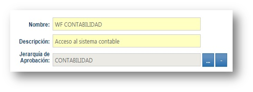

En esta opción se puede crear, modificar y eliminar los flujos de trabajo a usar, los flujos son configurables.
Un Workflow, es un conjunto de acciones a realizar luego de grabar una Solicitud de Acceso.
Por cada recurso solicitado se inicia automáticamente el flujo de Aprobación y/o Notificación definido para el recurso.

|
Name |
Description |
|
Las Acciones de un Workflow pueden ser de los siguientes tipos:
| |
|
En esta opción se creará un nuevo
 | |
|
Es posible modificar
|
|
Copyright (c) 2015. All rights reserved.
|
|
What do you think about this topic? Send feedback!
|


 a
a Workflow, y en este se definirán los pasos a seguir, al final de la creación presiones guardar .
Workflow, y en este se definirán los pasos a seguir, al final de la creación presiones guardar . o eliminar
o eliminar  un Workflow, tenga en cuenta que los Workflow asociados a un tipo de acceso no podrán ser eliminados.
un Workflow, tenga en cuenta que los Workflow asociados a un tipo de acceso no podrán ser eliminados.